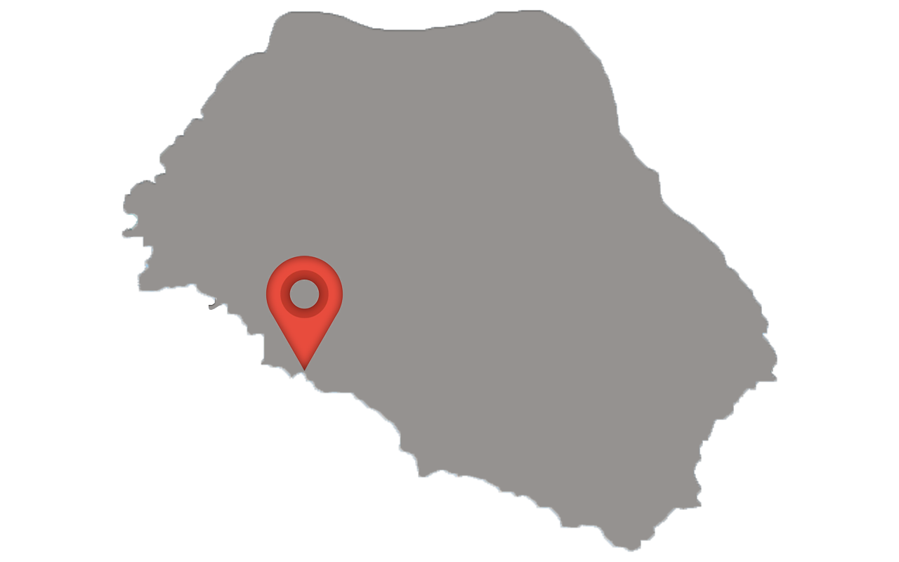
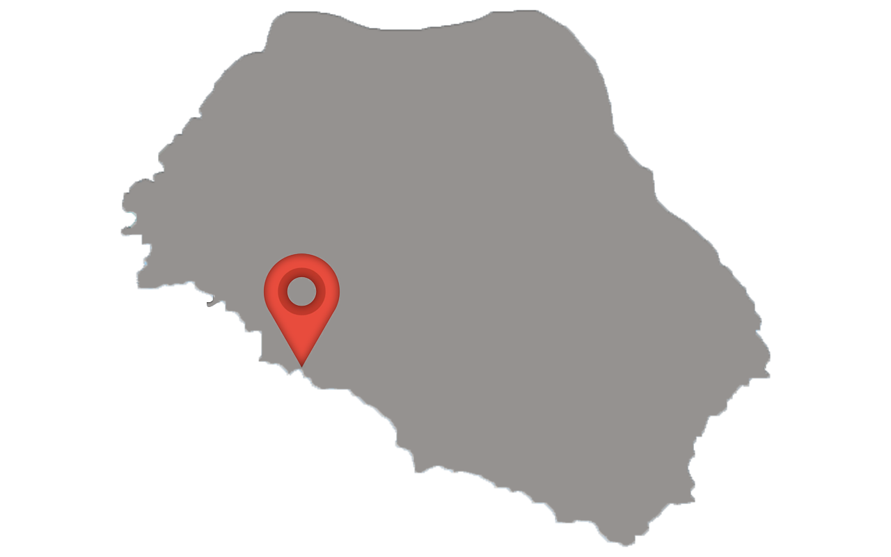

What Is Broken Beach ?
Broken Beach
Broken Beach (Pasih Uug) has big natural pool, with about a hundred meters in diameter, created by sea abrasion and collapsed limestone hill in million years ago. This hole has 98 meter in diameter and offering unique and scenic view. Incredible views like heaven on earth where in a middle of a cliff there is a circular hole and tunnels that penetrate directly to the sea, with breathtaking views of the ocean and the cliffs. This mesmerising place, you can't find a beach like this in any parts of this world, except on Nusa Penida Island in Bali. Broken Beach Nusa Penida is one of many awesome locations on the island and it is not to be missed! The natural bridge stretches over turquoise waters that flow in and out of the natural archway, hence the name Broken Beach.
 

Are They Dangerous ?
Broken Beach History

If you chose to ride motorbikes because of Nusa Penida’s shattered streets in the western part. That was a really painful journey and you’ve got to prepare for it but it was really worth visiting.
It took approximately 50 minutes from the resort to Broken Beach by motorbikes and even more by cars. I suggest you come early in the morning and choose the motorbike instead to experience an easy and effective journey.
Broken Beach (Pasih Uug) Entrance Fee
Visit to the Broken Beach (Pasih Uug) are subject to small an entrance fee of IDR 5,000 IDR per person, and 5,000 IDR for parking. This fees will give you access to both Angel's Billabong and Broken Beach.
And the payment should be cash in Indonesian Rupiah (IDR), so please prepare small cash before you come here.

Comments